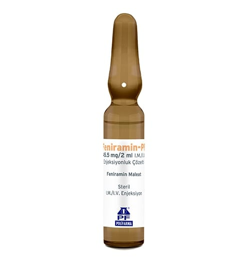

Feniramin-Pf 45,5 mg/2 ml I.M./I.V. Enjeksiyonluk Çözelti, 5 Flakon

Ne için kullanılır
KT · Bölüm 1FENİRAMİN - PF, 2 mL renksiz çözelti içeren amber renkli cam ampul içerisinde kas içine/damar içine uygulanan ve alerjik hastalıklara karşı etkili bir ilaçtır. Her bir ampul 2 mL’de 45,5 mg feniramin maleat içerir. 5 ampullük ambalajlar halinde kullanıma sunulmuştur.
FENİRAMİN - PF, akıntı lı mukoza iltihabında ve sulanan egzamalarda sıvı sızıntısını azaltmak için, kurdeşen, ani aşırı duyarlılık reaksiyonları ve alerji sonucu yüz ve boğazda oluşan şişliğin tedavisinde kullanılır.